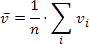

Pivot Grid Expression Syntax
The following topic contains constants, operators, and functions you can use in Pivot Grid expressions.
Note
Refer to Criteria Language Syntax for a list of basic constants, operators, and functions DevExpress products support.
Constants
| Constant | Description | Example |
|---|---|---|
| String | Wrap string constants in apostrophes. | [Country] = 'France' |
| constants | If a string contains an apostrophe, use double apostrophes. | [Name] = 'O''Neil' |
| Date-time constants | Wrap date-time constants in hash symbol '#'. | [OrderDate] >= #2018-03-22 13:18:51.94944# |
| Represents the 'True' Boolean value. | [InStock] = True | [InStock] = True |
| False | Represents the 'False' Boolean value. | [InStock] = False |
| Enumeration | To specify an enumeration value, use its underlying integer value. Do not use an enumeration's qualified name in an expression. | Correct: [Status] = 1 Incorrect: [Status] = Status.InProgress |
| GUID | Wrap a GUID constant in curly braces. Use GUID constants only with equality and inequality operators. | [OrderID] = {513724e5-17b7-4ec6-abc4-0eae12c72c1f} |
| Numeric | Add suffixes to literals to specify a numeric type: * Int32 (int) * Int16 (short) * Byte (byte) * Double (double) * Single (float) * Decimal (decimal) |
* [ID] = 25 * [Qty] = 25s * [ByteField] = 201b * [Price] = 25.0 * [Price] = 25.0f * [Price] = 25.0m |
| ? | A missing, invalid or unknown value. We recommend using the IsNull unary operator ("[Region] Is Null") or the IsNull logical function ("IsNull([Region])") instead. | [Region] != ? |
Operators
| Operator | Description | Example |
|---|---|---|
| + | Calculates the sum of two numeric operands. Concatenates the string representations of operands, if one of them is a string. | [UnitPrice] + 4 [FirstName] + ' ' + [LastName] |
| - | Subtracts the second operand from the first operand. | [Price1] - [Price2] |
| * | Multiplies operands. | [Quantity] * [UnitPrice] |
| / | Divides the first operand by the second operand. | [Quantity] / 2 |
| % | Returns the remainder after division of the first operand by the second operand. | [Quantity] % 3 |
| | | Performs a bitwise inclusive OR on two numeric expressions. Compares each bit of its first operand to the corresponding bit of its second operand. If either bit is 1, the corresponding resulting bit is set to 1. Otherwise, the corresponding resulting bit is set to 0. | [Number] | [Number] |
| & | The bitwise AND operator. Compares each bit of its first operand to the corresponding bit of its second operand. If both bits are 1, the corresponding resulting bit is set to 1. Otherwise, the corresponding resulting bit is set to 0. | [Number] & 10 |
| ^ | Performs a bitwise exclusive OR on two numeric expressions. | [Number] ^ [Number] |
| = == |
Returns true if operands are equal; otherwise, it returns false. | [Quantity] = 10 |
| != | Returns true if operands are not equal; otherwise, it returns false. | [Country] != 'France' |
| < | Relational 'less than' operator. | [UnitPrice] < 20 |
| <= | Relational 'less than or equal' operator. | [UnitPrice] <= 20 |
| >= | Relational 'greater than or equal' operator. | [UnitPrice] >= 30 |
| > | Relational 'greater than' operator. | [UnitPrice] > 30 |
| And && |
Performs a logical conjunction on two Boolean expressions. | [InStock] And ([ExtendedPrice]> 100) [InStock] && ([ExtendedPrice]> 100) |
| Or || |
Performs a logical disjunction on two Boolean expressions. | [Country]=='USA' Or [Country]=='UK' [Country]=='USA' || [Country]=='UK' |
| ~ | Performs a bitwise negation on a numeric expression. | ~[Roles] = 251 |
| Not ! |
Performs a logical negation on a Boolean expression. | Not [InStock] ![InStock] |
| + | Returns a numeric expression's value (a unary operator). | +[Value] = 10 |
| - | Returns the negative of a numeric expression's value (a unary operator). | -[Value] = 20 |
| Is Null | Returns true if an expression is a null reference, the one that does not refer to any object. | [Region] is null |
| In (value1,value2,...) | Specifies a list of values to test. Returns true if an operand is equal to a value contained in a list. | [Country] In ('USA', 'UK', 'Italy') |
| Between (value1,value2) | Specifies a range to test. Returns true if an operand is greater than or equal to the value1 and less than or equal to the value2. | [Quantity] Between(10, 20) [Product Name] Between('Ikura','Pavlova') |
Aggregate Functions
| Function | Description | Example |
|---|---|---|
| Avg(Value) | Returns the average of the values.  |
Avg([Quantity]) returns an average quantity of goods in an order, if the pivot table is built upon the data table where each row is an order. The Quantity values are summarized for all orders in the underlying data table, and the result is divided by the total number of orders. |
| Count() | Returns the number of records in the underlying data table. | Count() |
| IsTotal(Dimension1, Dimension2, …) | Determines whether a total summary value is being calculated. | Not IsTotal([fieldProductName]) And FirstValue([fieldCategoryName]) = ‘Beverages’ |
| FirstValue() | Returns the first value from rows used to calculate an aggregate value. | FirstValue([ProductName]) returns the first product among all products in the underlying data table, if the pivot table is built upon the data table where each row is a product. |
| Exists() | Not supported in Pivot Grid expressions. | |
| Max(Value) | Returns the maximum value. | Max([Quantity]) returns the maximum quantity of goods in a single order among all orders in the underlying data table, if the pivot table is built upon the data table where each row is an order. |
| Min(Value) | Returns the minimum value. | Min([Quantity]) returns the maximum quantity of goods in a single order among all orders in the underlying data table, if the pivot table is built upon the data table where each row is an order. |
| Single() | Not supported in Pivot Grid expressions. | |
| Sum(Value) | Returns the sum of all values. | Sum([Quantity]) returns the number of all items in all orders in the underlying data table, if the pivot table is built upon the data table where each row is an order. |
Date-time Functions
| Function | Description | Example |
|---|---|---|
| AddDays(DateTime, DaysCount) | Returns a date-time value that adds the specified number of days to the specified DateTime. | AddDays([OrderDate], 30) |
| AddHours(DateTime, HoursCount) | Returns a date-time value that adds the specified number of hours to the specified DateTime. | AddHours([StartTime], 2) |
| AddMilliSeconds(DateTime, MilliSecondsCount) | Returns a date-time value that adds the specified number of milliseconds to the specified DateTime. | AddMilliSeconds(([StartTime], 5000)) |
| AddMinutes(DateTime, MinutesCount) | Returns a date-time value that adds the specified number of minutes to the specified DateTime. | AddMinutes([StartTime], 30) |
| AddMonths(DateTime, MonthsCount) | Returns a date-time value that adds the specified number of months to the specified DateTime. | AddMonths([OrderDate], 1) |
| AddSeconds(DateTime, SecondsCount) | Returns a date-time value that adds the specified number of seconds to the specified DateTime. | AddSeconds([StartTime], 60) |
| AddTicks(DateTime, TicksCount) | Returns a date-time value that adds the specified number of ticks to the specified DateTime. | AddTicks([StartTime], 5000) |
| AddTimeSpan(DateTime, TimeSpan) | Returns a date-time value that adds the specified TimeSpan to the specified DateTime. | AddTimeSpan([StartTime], [Duration]) |
| AddYears(DateTime, YearsCount) | Returns a date-time value that adds the specified number of years to the specified DateTime. | AddYears([EndDate], -1) |
| DateDiffDay(startDate, endDate) | Returns the number of day boundaries between two non-nullable dates. | DateDiffDay([StartTime], Now()) |
| DateDiffHour(startDate, endDate) | Returns the number of hour boundaries between two non-nullable dates. | DateDiffHour([StartTime], Now()) |
| DateDiffMilliSecond(startDate, endDate) | Returns the number of millisecond boundaries between two non-nullable dates. | DateDiffMilliSecond([StartTime], Now()) |
| DateDiffMinute(startDate, endDate) | Returns the number of minute boundaries between two non-nullable dates. | DateDiffMinute([StartTime], Now()) |
| DateDiffMonth(startDate, endDate) | Returns the number of month boundaries between two non-nullable dates. | DateDiffMonth([StartTime], Now()) |
| DateDiffSecond(startDate, endDate) | Returns the number of second boundaries between two non-nullable dates. | DateDiffSecond([StartTime], Now()) |
| DateDiffTick(startDate, endDate) | Returns the number of tick boundaries between two non-nullable dates. | DateDiffTick([StartTime], Now()) |
| DateDiffYear(startDate, endDate) | Returns the number of year boundaries between two non-nullable dates. | DateDiffYear([StartTime], Now()) |
| GetDate(DateTime) | Returns the date component of the specified DateTime. | GetDate([OrderDateTime]) |
| GetDateWeekYear() | Returns the date of the first day of the week for a given DateTime (uses culture settings). | GetDateHourMinuteSecond([OrderDate]) |
| GetDay(DateTime) | Returns an integer that is the day of the month in the specified DateTime. | GetDay([OrderDate]) |
| GetDayOfWeek(DateTime) | Returns the day of the week in the specified DateTime. | GetDayOfWeek([OrderDate]) |
| GetDayOfYear(DateTime) | Extracts the day of the year from the defined DateTime. | GetDayOfYear([OrderDate]) |
| GetHour(DateTime) | Returns an integer that is the hour component of the specified DateTime, expressed as a value between 0 and 23. | GetHour([StartTime]) |
| GetMilliSecond(DateTime) | Returns an integer that is the millisecond component of the specified DateTime. | GetMilliSecond([StartTime]) |
| GetMinute(DateTime) | Returns an integer that is the minute component of the specified DateTime. | GetMinute([StartTime]) |
| GetMonth(DateTime) | Returns an integer that is the month component of the specified DateTime. | GetMonth([StartTime]) |
| GetSecond(DateTime) | Returns an integer that is the second component of the specified DateTime. | GetSecond([StartTime]) |
| GetTimeOfDay(DateTime) | Returns an integer that is the number of ticks that have elapsed since midnight. | GetTimeOfDay([StartTime]) |
| GetYear(DateTime) | Returns an integer that is the year component of the specified DateTime. | GetYear([StartTime]) |
| IsApril(DateTime) | Returns True if the specified date falls within April. | IsApril([OrderDate]) |
| IsAugust(DateTime) | Returns True if the specified date falls within August. | IsAugust([OrderDate]) |
| IsDecember(DateTime) | Returns True if the specified date falls within December. | IsDecember([OrderDate]) |
| IsFebruary(DateTime) | Returns True if the specified date falls within February. | IsFebruary([OrderDate]) |
| IsJanuary(DateTime) | Returns True if the specified date falls within January. | IsJanuary([OrderDate]) |
| IsJuly(DateTime) | Returns True if the specified date falls within July. | IsJuly([OrderDate]) |
| IsJune(DateTime) | Returns True if the specified date falls within June. | IsJune([OrderDate]) |
| IsLastMonth(DateTime) | Returns True if the specified date falls within the previous month. | IsLastMonth([OrderDate]) |
| IsLastYear(DateTime) | Returns True if the specified date falls within the previous year. | IsLastYear([OrderDate]) |
| IsMarch(DateTime) | Returns True if the specified date falls within March. | IsMarch([OrderDate]) |
| IsMay(DateTime) | Returns True if the specified date falls within May. | IsMay([OrderDate]) |
| IsNextMonth(DateTime) | Returns True if the specified date falls within the next month. | IsNextMonth([OrderDate]) |
| IsNextYear(DateTime) | Returns True if the specified date falls within the next year. | IsNextYear([OrderDate]) |
| IsNovember(DateTime) | Returns True if the specified date falls within November. | IsNovember([OrderDate]) |
| IsOctober(DateTime) | Returns True if the specified date falls within October. | IsOctober([OrderDate]) |
| IsSameDay(DateTime, DateTime) | Returns True if the specified DateTime values fall within the same day. | IsSameDay([OrderDate], [ShipDate] ) |
| IsSeptember(DateTime) | Returns True if the specified date falls within September. | IsSeptember([OrderDate]) |
| IsThisMonth(DateTime) | Returns True if the specified date falls within the current month. | IsThisMonth([OrderDate]) |
| IsThisWeek(DateTime) | Returns True if the specified date falls within the current week. | IsThisWeek([OrderDate]) |
| IsYearToDate(DateTime) | Returns True if the specified date falls within the year-to-date period. This period starts from the first day of the current year and continues up to the current date including today. | IsYearToDate([OrderDate]) |
| IsThisYear(DateTime) | Returns True if the specified date falls within the current year. | IsThisYear([OrderDate]) |
| LocalDateTimeDayAfterTomorrow() | Returns a date component of the DateTime value which is the day after tomorrow. | AddDays(LocalDateTimeDayAfterTomorrow(), 5) |
| LocalDateTimeLastMonth() | Returns the date which is the first day of the previous month. | AddMonths(LocalDateTimeLastMonth(), 5) |
| LocalDateTimeLastWeek() | Returns the date which is the first day of the previous week. | AddDays(LocalDateTimeLastWeek(), 5) |
| LocalDateTimeLastYear() | Returns the date which is the first day of the previous year. | AddYears(LocalDateTimeLastYear(), 5) |
| LocalDateTimeNextMonth() | Returns the date which is the first day of the next month. | AddMonths(LocalDateTimeNextMonth(), 5) |
| LocalDateTimeNextWeek() | Returns the date which is the first day of the next week. | AddDays(LocalDateTimeNextWeek(), 5) |
| LocalDateTimeNextYear() | Returns the date which is the first day of the next year. | AddYears(LocalDateTimeNextYear(), 5) |
| LocalDateTimeNow() | Returns the current date and time. | AddDays(LocalDateTimeNow(), 5) |
| LocalDateTimeThisMonth() | Returns the date which is the first day of the current month. | AddMonths(LocalDateTimeThisMonth(), 5) |
| LocalDateTimeThisWeek() | Returns the date which is the first day of the current week. | AddDays(LocalDateTimeThisWeek(), 5) |
| LocalDateTimeThisYear() | Returns the date which is the first day of the current year. | AddYears(LocalDateTimeThisYear(), 5) |
| LocalDateTimeToday() | Returns the current date. | AddDays(LocalDateTimeToday(), 5) |
| LocalDateTimeTomorrow() | Returns the tomorrow's date. | AddDays(LocalDateTimeTomorrow(), 5) |
| LocalDateTimeTwoMonthsAway() | Returns the date which is the first day of the next month. | AddMonths(LocalDateTimeTwoMonthAway(), 5) |
| LocalDateTimeTwoWeeksAway() | Returns the date which is the first day of the next week. | AddDays(LocalDateTimeTwoWeeksAway(), 5) |
| LocalDateTimeTwoYearsAway() | Returns the date which is the first day of the next year. | AddYears(LocalDateTimeTwoYearsAway(), 5) |
| LocalDateTimeYearBeforeToday() | Returns the date which is the day one year ago. | AddYears(LocalDateTimeYearBeforeToday(), 5) |
| LocalDateTimeYesterday() | Returns the yesterday's date. | AddDays(LocalDateTimeYesterday(), 5) |
| Now() | Returns the current system date and time. | AddDays(Now(), 5) |
| Today() | Returns a DateTime value that is the today's date with the time component set to 00:00:00 (midnight). | AddMonths(Today(), 1) |
| UtcNow() | Returns the current system date and time, expressed as the Coordinated Universal Time (UTC). | AddDays(UtcNow(), 7) |
Logical Functions
| Function | Description | Example |
|---|---|---|
| Iif(Expression1, True_Value1, ..., ExpressionN, True_ValueN, False_Value) | Returns one of several specified values depending upon the values of logical expressions. The function can take 2N+1 arguments (N - the number of specified logical expressions): * Each odd argument specifies a logical expression; * Each even argument specifies the value that is returned if the previous expression evaluates to true |
Iif(Name = 'Bob', 1, 0) Iif(Name = 'Bob', 1, Name = 'Dan', 2, Name = 'Sam', 3, 0) |
| IsNull(Value) | Returns True if the specified Value is NULL. | IsNull([OrderDate]) |
| IsNull(Value1, Value2) | Returns Value1 if it is not set to NULL; otherwise, Value2 is returned. | IsNull([ShipDate], [RequiredDate]) |
| IsNullOrEmpty(String) | Returns True if the specified String object is NULL or an empty string; otherwise, False is returned. | IsNullOrEmpty([ProductName]) |
Math Functions
| Function | Description | Example |
|---|---|---|
| Abs(Value) | Returns the given numeric expression's absolute, positive value. | Abs(1 - [Discount]) |
| Acos(Value) | Returns a number's arccosine (the angle in radians, whose cosine is the given float expression). | Acos([Value]) |
| Asin(Value) | Returns a number's arcsine (the angle in radians, whose sine is the given float expression). | Asin([Value]) |
| Atn(Value) | Returns a number's arctangent (the angle in radians, whose tangent is the given float expression). | Atn([Value]) |
| Atn2(Value1, Value2) | Returns the angle whose tangent is the quotient of two specified numbers in radians. | Atn2([Value1], [Value2]) |
| BigMul(Value1, Value2) | Returns an Int64 containing the full product of two specified 32-bit numbers. | BigMul([Amount], [Quantity]) |
| Ceiling(Value) | Returns the smallest integer that is greater than or equal to the numeric expression. | Ceiling([Value]) |
| Cos(Value) | Returns the angle's cosine, in radians. | Cos([Value]) |
| Cosh(Value) | Returns the angle's hyperbolic cosine, in radians. | Cosh([Value]) |
| Exp(Value) | Returns the float expression's exponential value. | Exp([Value]) |
| Floor(Value) | Returns the largest integer less than or equal to the numeric expression. | Floor([Value]) |
| Log(Value) | Returns a specified number's natural logarithm. | Log([Value]) |
| Log(Value, Base) | Returns the logarithm of a specified number in a specified Base. | Log([Value], 2) |
| Log10(Value) | Returns a specified number's base 10 logarithm. | Log10([Value]) |
| Max(Value1, Value2) | Returns the maximum value from the specified values. | Max([Value1], [Value2]) |
| Min(Value1, Value2) | Returns the minimum value from the specified values. | Min([Value1], [Value2]) |
| Power(Value, Power) | Returns a specified number raised to a specified power. | Power([Value], 3) |
| Rnd() | Returns a random number that is less than 1, but greater than or equal to zero. | Rnd()*100 |
| Round(Value) | Rounds the given value to the nearest integer. | Round([Value]) |
| Round(Value, Precision) | Rounds the given value to the nearest integer, or to a specified number of decimal places. | Round([Value], 2) |
| Sign(Value) | Returns the positive (+1), zero (0), or negative (-1) sign of the given expression. | Sign([Value]) |
| Sin(Value) | Returns the sine of the angle defined in radians. | Sin([Value]) |
| Sinh(Value) | Returns the hyperbolic sine of the angle defined in radians. | Sinh([Value]) |
| Sqr(Value) | Returns the square root of a given number. | Sqr([Value]) |
| Tan(Value) | Returns the tangent of the angle defined in radians. | Tan([Value]) |
| Tanh(Value) | Returns the hyperbolic tangent of the angle defined in radians. | Tanh([Value]) |
| ToDecimal(Value) | Converts Value to an equivalent decimal number. | ToDecimal([Value]) |
| ToDouble(Value) | Converts Value to an equivalent 64-bit double-precision floating-point number. | ToDouble([Value]) |
| ToFloat(Value) | Converts Value to an equivalent 32-bit single-precision floating-point number. | ToFloat([Value]) |
| ToInt(Value) | Converts Value to an equivalent 32-bit signed integer. | ToInt([Value]) |
| ToLong(Value) | Converts Value to an equivalent 64-bit signed integer. | ToLong([Value]) |
String Functions
| Function | Description | Example |
|---|---|---|
| Ascii(String) | Returns the ASCII code value of the leftmost character in a character expression. | Ascii('a') |
| Char(Number) | Converts an integerASCIICode to a character. | Char(65) + Char(51) |
| CharIndex(String1, String2) | Returns the starting position of String1 within String2, beginning from the zero character position to the end of a string. | CharIndex('e', 'devexpress') |
| CharIndex(String1, String2, StartLocation) | Returns the starting position of String1 within String2, beginning from the StartLocation character position to the end of a string. | CharIndex('e', 'devexpress', 2) |
| Concat(String1, ... , StringN) | Returns a string value containing the concatenation of the current string with any additional strings. | Concat('A', ')', [ProductName]) |
| Contains(String1, SubString1) | Returns True if SubString1 occurs within String1; otherwise, False is returned. | Contains([ProductName], 'dairy') |
| EndsWith(String1, SubString1) | Returns True if the end of String1 matches SubString1; otherwise, False is returned. | EndsWith([Description], 'The end.') |
| Insert(String1, StartPosition, String2) | Inserts String2 into String1 at the position specified by StartPositon | Insert([Name], 0, 'ABC-') |
| Len(Value) | Returns an integer containing either the number of characters in a string or the nominal number of bytes required to store a variable. | Len([Description]) |
| Lower(String) | Returns String in lowercase. | Lower([ProductName]) |
| PadLeft(String, Length) | Left-aligns the defined string's characters, padding its left side with white space characters up to a specified total length. | PadLeft([Name], 30) |
| PadLeft(String, Length, Char) | Left-aligns the defined string's characters, padding its left side with the specified Char up to a specified total length. | PadLeft([Name], 30, '<') |
| PadRight(String, Length) | Right-aligns the defined string’s characters, padding its left side with empty space characters up to a specified total length. | PadRight([Name], 30) |
| PadRight(String, Length, Char) | Right-aligns the defined string’s characters, padding its left side with the specified Char up to a specified total length. | PadRight([Name], 30, '>') |
| Remove(String, StartPosition) | Deletes all the characters from this instance, beginning at a specified position. | Remove([Name], 3) |
| Remove(String, StartPosition, Length) | Deletes a specified number of characters from this instance, beginning at a specified position. | Remove([Name], 0, 3) |
| Replace(String, SubString2, String3) | Returns a copy of String1, in which SubString2 has been replaced with String3. | Replace([Name], 'The ', '') |
| Reverse(String) | Reverses the order of elements within String. | Reverse([Name]) |
| StartsWith(String1, SubString1) | Returns True if the beginning of String1 matches SubString1; otherwise, False. | StartsWith([Title], 'The best') |
| Substring(String, StartPosition, Length) | Retrieves a substring from String. The substring starts at StartPosition and has a specified Length. | Substring([Description], 2, 3) |
| Substring(String, StartPosition) | Retrieves a substring from String. The substring starts at StartPosition. | Substring([Description], 2) |
| ToStr(Value) | Returns a string representation of an object. | ToStr([ID]) |
| Trim(String) | Removes all leading and trailing SPACE characters from String. | Trim([ProductName]) |
| Upper(String) | Returns String in uppercase. | Upper([ProductName]) |
Operator Precedence
When an expression contains multiple operators, their precedence determines the order in which expression elements are evaluated.
- Literal values
- Parameters
- Identifiers
- OR (left-associative)
- AND (left-associative)
- '.' relationship qualifier (left-associative)
- ==, !=
- <, >, <=, >=
- -, + (left-associative)
- *, /, % (left-associative)
- NOT
- unary -
- In
- Iif
- Trim(), Len(), Substring(), IsNull()
- '[]' (for set-restriction)
- '()'
You can group elements with parentheses to change the default precedence. For instance, the operators are performed in the default order in the first code sample below. In the second code sample, the addition operation is performed first because its associated elements are grouped with parentheses, and the multiplication operation is performed last.
Accounts[Amount == 2 + 48 * 2]
Accounts[Amount == (2 + 48) * 2]
Case Sensitivity
Operators are case insensitive.
Note
A data source affects certain operators' behavior. For instance, SQL Server Express 2005 is configured as case insensitive. In this case, the following expression always evaluates to true:
Lower(Name) == Upper(Name)
Escape Characters
Use a backslash () as an escape character for characters in expressions, for example:
- \[
- \\
- \'
Export to XLS and XLSX
The Pivot Grid does not export expressions to XLS and XLSX format.